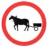

3. ЗАПРЕЩАЮЩИЕ ЗНАКИ
311а. Движение запрещено.
Запрещается движение всех транспортных средств.
311b-311d. Запрещено движение на дороге, находящейся в частном владении.
Дорога, находящаяся в частном владении, не предусмотрена для общего пользования.
При наличии знака 311b допускается движение транспортных средств только с разрешения собственника дороги.
При наличии знака 311с допускается движение транспортных средств с разрешения собственника дороги или транспортных средств, управляемых лицами, указанными на знаке.
При наличии знака 311d допускается движение транспортных средств без разрешения собственника дороги и под ответственность лиц, управляющих транспортными средствами, поскольку на дороге, находящейся в частном владении, не созданы условия для безопасного движения.
Движение моторных транспортных средств запрещено.
Движение грузовых автомобилей запрещено.
Запрещается движение транспортных средств категории "С", тракторов и самоходных машин. В случае указания на знаке максимальной массы запрещается движение названных транспортных средств или автопоездов, тягачом в которых является одно из них, если регистрационная масса превышает указанную на знаке.
Движение мотоциклов запрещено.
Движение мотосаней запрещено.
Движение тракторов запрещено.
Запрещается движение тракторов и самоходных машин.
Движение автопоездов запрещено.
Если на знаке указана максимальная масса (в тоннах), то запрещается движение автопоездов, регистрационная масса которых превышает указанную на знаке. Действие знака не распространяется на автопоезда с прицепами легкого типа.
Движение гужевых повозок запрещено.

Запрещаются движение гужевых повозок и прогон скота.
Движение с опасным грузом запрещено.
Запрещается движение транспортных средств (автопоездов),
перевозящих опасный груз.
Движение на велосипедах запрещено.
Запрещается движение на велосипедах и мопедах.
Движение на мопедах запрещено.
Верховая езда запрещена.
Движение пешеходов запрещено.
Действие знака распространяется только на ту сторону дороги, на которой он установлен.
Въезд запрещен.
Запрещается дальнейшее движение всех транспортных средств.
Поворот направо запрещен.
Действие знака распространяется только на ту зону пересечения проезжих частей, перед которыми он установлен.
Поворот налево запрещен.
Действие знака распространяется только на ту зону пересечения проезжих частей, перед которыми он установлен.
Разворот запрещен.
Таможенный контроль.
Запрещается дальнейшее движение без остановки и разрешения таможенника.
336а. Полицейский контроль.
Запрещается дальнейшее движение без остановки и разрешения чиновника полиции.
336b. Контроль.
Запрещается дальнейшее движение без остановки и разрешения контролера.
341. Ограничение массы.
Запрещается движение транспортных средств (автопоездов),
фактическая масса которых больше указанной на знаке.
342а. Ограничение нагрузки на ось.
Запрещается движение транспортных средств (автопоездов), у которых нагрузка на любую из осей больше указанной на знаке.
342b. Ограничение нагрузки на устройство независимой подвески колеса.
Запрещается движение транспортных средств (автопоездов), у которых нагрузка на любое из устройств независимой подвески колеса больше указанной на знаке.
Ограничение высоты.
Запрещается движение транспортных средств (автопоездов), габаритная высота которых с грузом или без груза больше указанной на знаке.
Ограничение ширины.
Запрещается движение транспортных средств (автопоездов), габаритная ширина которых с грузом или без груза больше указанной на знаке.
Ограничение длины.
Запрещается движение транспортных средств (автопоездов), габаритная длина которых с грузом или без груза больше указанной на знаке.
Максимальная скорость.
Запрещается движение со скоростью (км/ч), превышающей указанную на знаке.
Обгон запрещен.
Запрещается обгон транспортных средств, кроме одиночных, движущихся со скоростью не более 30 км/ч.
Обгон грузовым автомобилям запрещен.
Запрещается транспортным средствам категории "С", тракторам и самоходным машинам обгон всех транспортных средств, кроме одиночных, движущихся со скоростью не более 30 км/ч.
Минимальная дистанция.

Запрещается движение транспортных средств с дистанцией между ними меньше указанной на знаке.
Подача звукового сигнала запрещена.
Как исключение, звуковой сигнал допускается подавать для предотвращения опасности.
Остановка запрещена.
Действие знака распространяется только на ту сторону дороги, на которой он установлен.
Действие знака 361 не распространяется на транспортные средства общего пользования.
Парковка запрещена.
Действие знака распространяется только на ту сторону дороги, на которой он установлен.
Действие знака не распространяется на легковые автомобили с красным крестом, перевозящие медицинских работников, которые оказывают врачебную помощь, а также таксомоторы с включенным таксометром.
Парковка запрещена по нечетным числам месяца. 364. Парковка запрещена по четным числам месяца.
Действие знаков распространяется только на ту сторону дороги, на которой они установлены.
Действие знаков не распространяется на легковые автомобили с красным крестом, перевозящие меди- цинских работников, которые оказывают врачебную по- мощь, а также таксомоторы с включенным таксометром.
Если на участке дороги с одной ее стороны установлен знак 363, а с другой - 364, то перестановку транспортных средств с одной стороны на другую следует производить с 19 до 21 часа.
Конец зоны ограничения максимальной скорости.
Конец зоны запрещения обгона.
Конец зоны запрещения обгона грузовым автомобилям.
376. Конец зоны всех ограничений.
Обозначение конца зоны действия одновременно нескольких знаков
35 и 36.